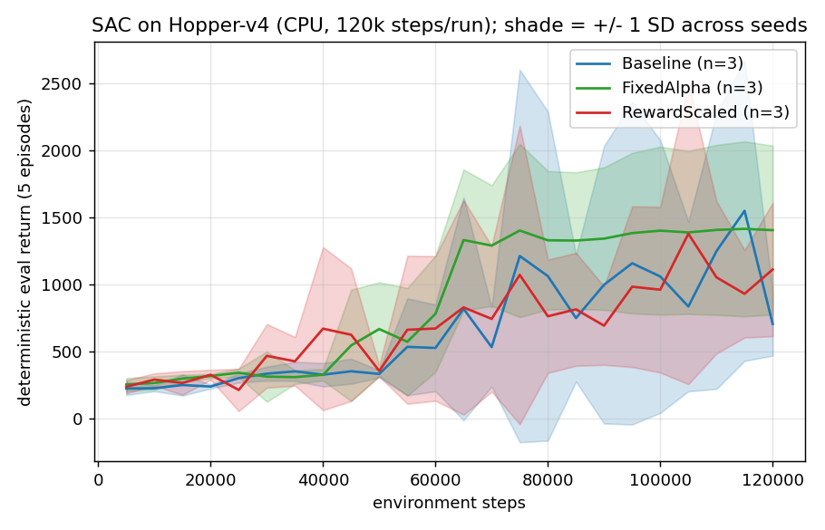
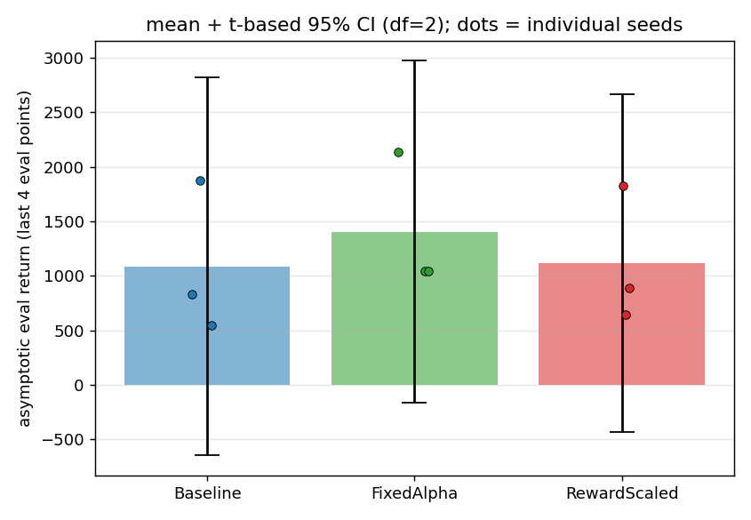

Does critic reward scaling change SAC on Hopper-v4? A pre-registered null result
From-scratch PyTorch SAC · three arms · CPU · 120k steps/run · 3 seeds/arm
1 · Motivation
SAC (Haarnoja et al., 2018) couples the Q-magnitude to the entropy temperature α through
the max-entropy objective. A common engineering knob is to multiply the reward entering the
critic's Bellman backup by a fixed reward_scale, which shrinks Q-target magnitude.
The pre-registered hypothesis was that smaller Q targets reduce critic over-estimation bias and
stabilise learning, yielding higher asymptotic deterministic return and faster early learning on
Hopper-v4. The goal of the project was not to invent an algorithm: it was to implement SAC
correctly from scratch, instrument it, run a controlled multi-seed measurement, and report
whatever the data said.
2 · Pre-registered design
The hypothesis and primary outcome were written in
PRE_REGISTRATION.md
on 2026-10-01, immediately after Pendulum validation and before launching any Hopper run. The
logged Bellman target in src/sac.py is:
The logged episode return is always the unscaled env return, so arms are compared on the true objective.
| Arm | reward_scale | entropy temperature | Purpose |
|---|---|---|---|
| Baseline | 1.0 | auto-tuned α (init 0.2) | rewards as emitted by the env |
| RewardScaled | 0.1 | auto-tuned α (init 0.2) | pre-registered arm: shrink Q targets |
| FixedAlpha | 0.1 | α = 0.2 frozen, no auto-tune | post-hoc control: separate reward scaling from the auto-tuned α trajectory |
Shared settings across all arms (from configs/sac_hopper_*.yaml):
- Env Hopper-v4; 120,000 env steps per run; 1 gradient step per step after 1000 warmup steps.
- 256×256 MLPs; Adam lr 3e-4; γ = 0.99; τ = 0.005; batch 256; replay buffer 1e6.
- Deterministic eval: 5 episodes per eval point, every 5k steps; asymptotic window = last 4 eval points (105k–120k).
- Seeds 0, 1, 2 per arm; CPU only, 4 torch threads; no Hopper hyperparameter tuning.
3 · Implementation & end-to-end validation
SAC is implemented from scratch in PyTorch (no Stable-Baselines3): uniform circular replay buffer,
tanh-squashed diagonal-Gaussian actor whose analytic log-prob includes both the tanh Jacobian and
the linear action-rescale Jacobian, twin critics with min-over-Q, soft target updates, and
automatic entropy temperature. Before any Hopper run the loop was validated on Pendulum-v1:
deterministic eval return improved from roughly −1600 to roughly −85 within 6k steps
(per RESEARCH_RETRO.md). CI keeps a loose learn gate (Δ ≥ 150) that asserts the
deterministic eval return actually improves on Pendulum rather than merely running.
4 · Results — measured null
Asymptotic window = last 4 eval points (105k–120k); each per-seed value is the mean of those four
deterministic eval returns. Mean ± sample SD (ddof = 1), n = 3. Every figure below is recomputed
independently from the committed raw CSVs by docs/assets/recompute_stats.py
(machine-readable output: docs/assets/results.json).
| Arm | per-seed tail means (s0, s1, s2) | Mean | SD | t-95% half-width (df=2) |
|---|---|---|---|---|
| Baseline (scale 1.0, auto α) | 547.4, 1873.2, 833.1 | 1084.6 | 697.7 | ±1733.2 |
| RewardScaled (scale 0.1, auto α) | 644.6, 886.1, 1823.8 | 1118.2 | 622.9 | ±1547.3 |
| FixedAlpha (scale 0.1, α=0.2) | 2133.1, 1038.7, 1039.2 | 1403.6 | 631.7 | ±1569.2 |
Source: logs/hopper_{baseline,rewardscale,fixedalpha}_s{0,1,2}/progress.csv,
phase == "eval", last 4 rows; recomputed by docs/assets/recompute_stats.py.
(The README rounds these to 1085 ± 698, 1118 ± 623, 1404 ± 632.)
Pairwise Welch t-tests (scipy ttest_ind, equal_var = False)
| Contrast | t | p | mean diff | 95% CI (Welch) |
|---|---|---|---|---|
| Baseline vs RewardScaled (pre-registered) | −0.062 | 0.953 | −33.6 | [−1540.4, 1473.3] |
| Baseline vs FixedAlpha | −0.587 | 0.589 | −319.1 | [−1833.6, 1195.5] |
| FixedAlpha vs RewardScaled | +0.557 | 0.607 | +285.5 | [−1136.7, 1707.7] |
One-way ANOVA (scipy.f_oneway): F = 0.217, p = 0.811. Primary-contrast effect size:
Cohen's d = −0.051, Hedges' g = −0.041 (pooled SD 661.4) — a trivially small point estimate that
is itself unreliable at n = 3.

plot.py from the committed CSVs.
Descriptive training dynamics (last logged train row per seed)
Reward scaling couples to the auto-tuned temperature, which is why the FixedAlpha control was added. From the committed CSVs: final α mean ≈ 0.080 (Baseline; per-seed 0.066, 0.106, 0.068) vs ≈ 0.0055 (RewardScaled; 0.0037, 0.0066, 0.0063), and FixedAlpha holds α = 0.2 by construction. Final mean Q₁: Baseline ≈ 170, RewardScaled ≈ 19, FixedAlpha ≈ 36. These are descriptive, not inferential.
5 · Why this null result is worth reporting
- The tempting result overturned. The first 60k pass looked like reward scaling won by ~3× (narrative in
RESEARCH_RETRO.md; those old CSVs are not committed). Restoring the pre-registered 120k budget and adding the fixed-alpha control showed that gap was early-training seed noise, not a benefit. - Pre-registration survived contact with the data. The direction was registered in advance; when the data came back null, the conclusion was written as null rather than reframed.
- The control arm isolates a confound. Reward scaling acts through two paths — Q-target magnitude and the auto-tuned α trajectory. Without FixedAlpha, any apparent difference could not be attributed to critic bias alone.
- Variance is reported, not smoothed. One seed per arm runs away to ~1800–2100 while others sit ~600–1000; raw seed dots are shown rather than a tidy 1.96×SEM interval that would look falsely precise.
6 · The bug that taught the workflow lesson
The first Pendulum run appeared to learn nothing: Q-values went positive despite all-negative
rewards, and deterministic eval returned the same bad number at every checkpoint. A 20-line
diagnostic found log π exploding to ~1e15: the Gaussian log-prob was centred at zero
x² instead of at the predicted mean (x − μ)², and that spurious gradient collapsed the
policy. One-line fix, but the lesson was operational: check the quantities that must
have the right sign/magnitude (Q sign here) before concluding "more data will fix it". The fix is
locked by analytic log-prob tests in tests/test_core.py (including a non-zero-mean,
non-unit-std case checked against scipy's multivariate-normal logpdf).
7 · Reproduction & tests
pip install -r requirements.txt
# unit tests (buffer, actor log-prob & Jacobian, critic shapes, one SAC update,
# reward_scale linearity, plot stats, learn gate, divergence guards)
pytest tests/ -q
# end-to-end learn gate on Pendulum (asserts eval improves, Delta >= 150)
python ci_check.py
# validation run (not part of the Hopper study)
python train.py --config configs/sac_pendulum.yaml --seed 0 --out logs/pendulum_val_s0
# one arm of the study (repeat per seed / config)
python train.py --config configs/sac_hopper_baseline.yaml --seed 0 --out logs/hopper_baseline_s0
python train.py --config configs/sac_hopper_rewardscale.yaml --seed 0 --out logs/hopper_rewardscale_s0
python train.py --config configs/sac_hopper_fixedalpha.yaml --seed 0 --out logs/hopper_fixedalpha_s0
# plots + summary stats from the committed CSVs
python plot.py
# independent recompute used on this page
python docs/assets/recompute_stats.py
Environment note: PRE_REGISTRATION.md planned gymnasium 1.3.0 / mujoco 3.14.0; the
committed Hopper CSVs were produced on gymnasium 1.4.0 / mujoco 3.15.0 (pinned in
requirements.txt). Hopper-v4 reward semantics are unchanged across these minor bumps;
the discrepancy is logged in the README rather than retro-edited into the pre-registration.
8 · Honest limitations
- Single environment (Hopper-v4), 120k steps, CPU only — not SOTA, not a 1M-step benchmark.
- n = 3 with this seed variance gives essentially no statistical power; a null here means "not detectable", never "no effect". Modest effects would be invisible.
- No observation normalisation; bootstrap on time-limit truncation (correct), but rewards are not normalised.
- Multi-threaded CPU torch reductions are not bit-deterministic; re-runs reproduce the qualitative result, not identical floats (hence the loose learn gate).
- FixedAlpha and the post-hoc tests are uncorrected exploratory analyses.